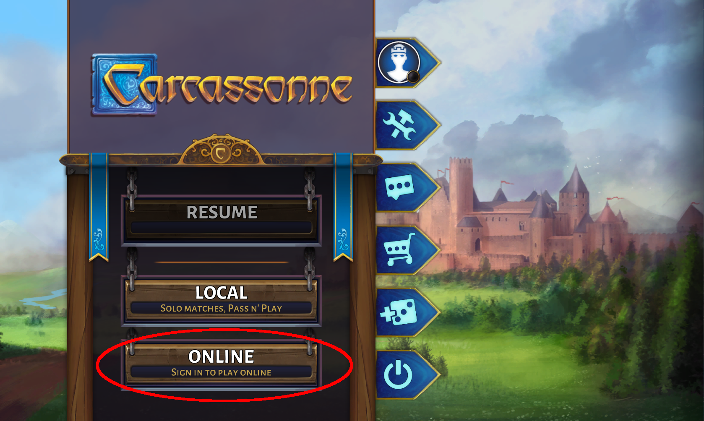
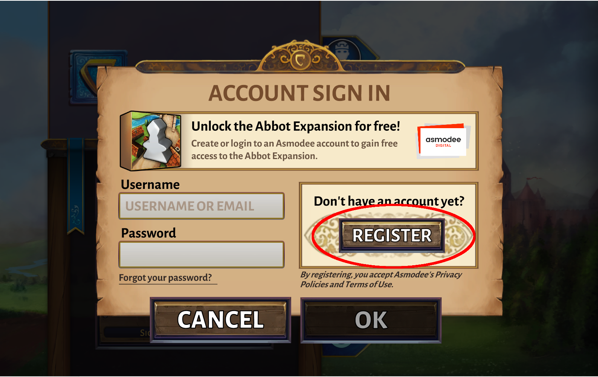
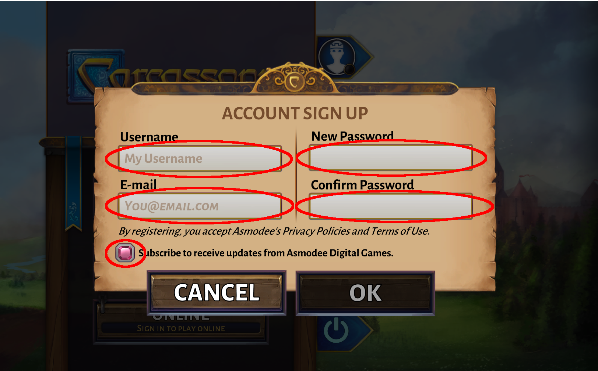
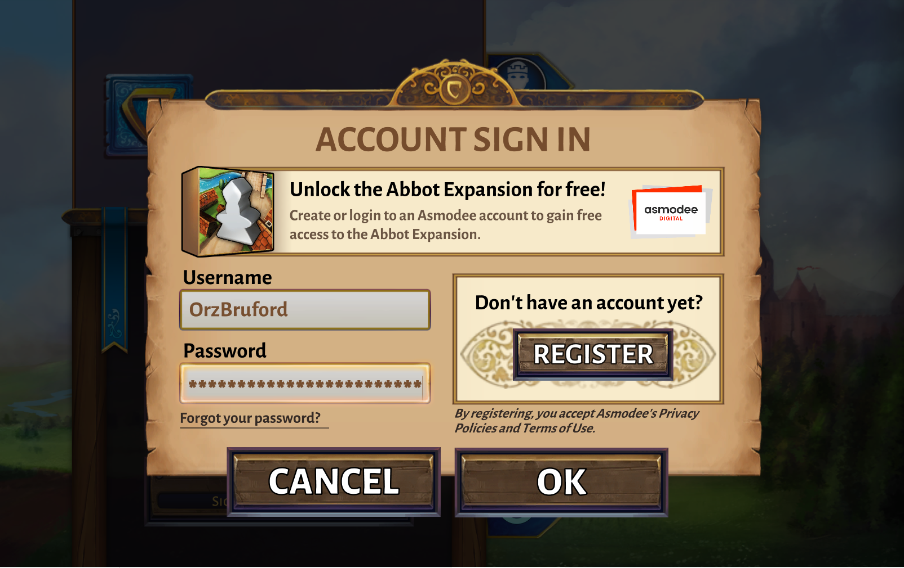
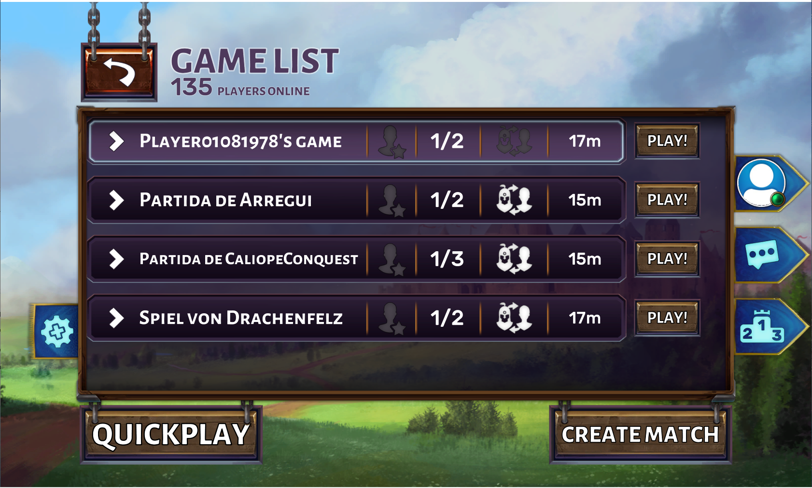
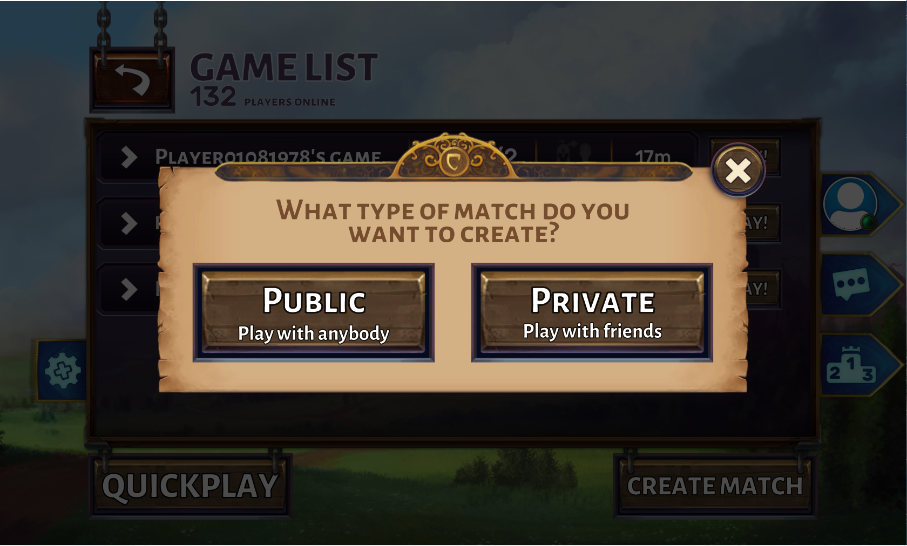

めずらしく実用的な記事になります。
カルカソンヌのデジタルアプリはいくつか出ていますが、Asmodee が作った Carcassonne – Tiles & Tactics が公式のアプリと位置づけられています。Windows 版の購入は現在 3 箇所でできるようですが、Steam 内で購入するのが最も一般的なようです。
Asmodee 版 Carcassonne – Tiles & Tactics ですが、Android 版、iPhone 版もリリースされています。Windows 版を含め以下 Asmodee 版と呼びます。
Asmodee 版は一人でプレイすることができ、その場合は AI と対戦することになります (FAQ にそう書いてあります)。ですが Asmodee 版は自分以外のプレイヤーとリモート対戦もすることができます。リモート対戦をするには Asmodee Connect のアカウントを作って、ゲーム内でログインする必要があります。
Asmodee Connect のアカウントは Web からつくることもできますが、この稿ではゲーム内から Asmodee Connect アカウントを作る方法を解説します。
Asmodee 版を起動すると以下のようなメニューが表示されます。
赤い丸で囲んだ “ONLINE” というボタンをクリックします。
すると上図のような画面が現れるので、赤い丸で囲った “REGISTER” と書かれたボタンをクリックします。
すると上図のような画面が現れるので、“Username”、“E-mail”、“New Password”、“Confirm Password” を入力し、Subscribe to ... と書かれているチェックボックスを On にします。このチェックボックスを On にしているとソフトウェアのアップデートがあったときにメールでアップデートのお知らせが届くようになります。チェックボックスがピンク色だと On になっています。
“OK” ボタンをクリックすると、入力したメールアドレス宛に確認のためのメールが送られてきますので、メールに書かれた URL をクリックして、Asmodee Connect アカウントを有効にします。
Asmodee Connect のアカウントが有効になるので、ゲーム内のログイン画面でユーザ名とパスワードを入力して Asmodee Connect にログインします。
すると、現在プレイヤーを募集しているゲームが一覧で表示されますので、そこからゲームを選んでもかまいませんし、右下の “CREATE MATCH” ボタンをクリックすれば下図のような画面になり、公開されたゲームか非公開のプライベートなゲームをつくることができます。
なおプライベートなゲームを作成するときは、対戦相手をフレンド登録しておかないとゲームを作成することができません。ゲーム内でフレンド登録するには相手もログインしていないと相手の名前をゲームに登録はおろか、検索すらできないので、あらかじめ時間を打ち合わせて、同じ時間にログインしてゲームを作るのがいいでしょう。
なお相手の検索のためだけにお互いの時間を打ち合わせて同時にログインするのが大変という場合は、Asmodee Connect の Web 版にログインすれば、相手がログインしていなくても相手の名前を検索できて、フレンド登録もできるので、必要に応じて Web 版の Asmodee Account のサイトを使うのがいいかと思います。
©2024 OrzBruford